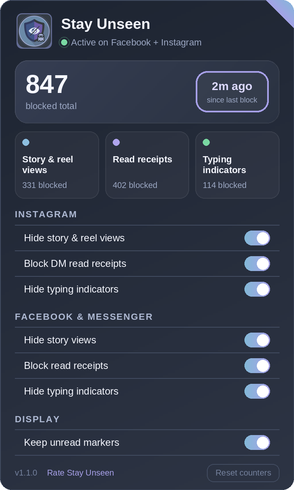

Story and reel views
The write that puts your name in the viewer list is dropped. The story still opens and still plays. Your name just never arrives.
Active on Facebook + Instagram
Open a story, read a message, start typing a reply — Instagram, Facebook and Messenger report all three back to the other person. Stay Unseen holds those signals inside your browser, before they are sent. Six blocking switches, a counter for everything it stopped, and no server anywhere in the picture.

Three signals
Each one is a separate request the site makes on your behalf, and each has its own switch. Turn one off and that site behaves normally again, immediately.
The write that puts your name in the viewer list is dropped. The story still opens and still plays. Your name just never arrives.
Read your DMs without their message flipping to “Seen”. The mark-as-read call never leaves — and replying still works normally, because a message you chose to send is not a receipt.
Write, rewrite and delete a reply without the bubbling dots appearing on their screen. These go out over websockets as often as plain requests, so both paths are covered.
The difference
Your side of the app does not change at all. Theirs stops filling in.
Interactive
Both demos are live. Flip a switch and the other person's side empties out or fills back in — exactly like the real extension.
On: the receipt stays Delivered and the typing dots never reach them. Off: it behaves like a stock browser.
On: your view never arrives — not your name, not the time, and the count stays one lower. Off: watching reports you like everyone else.
The interface
Click the toolbar icon and this is everything: what it is protecting right now, what it has stopped, and a switch for each signal. Counters are per feature, so you can see which kind your own browsing actually produces.
Mechanism
Some signals go out as ordinary POSTs a network rule can cancel outright. Others are GraphQL calls and websocket frames that share an address with the traffic making the site work. So Stay Unseen works at both levels.
Layer 01
A fixed list of endpoint patterns, shipped inside the extension and handed to
the browser's own blocker — declarativeNetRequest on Chrome and
Edge, blocking webRequest on Firefox. Scoped to instagram.com,
facebook.com and messenger.com, and never fetched from anywhere.
Layer 02
At document_start, before the site's own code runs, Stay Unseen
wraps fetch, XMLHttpRequest and
WebSocket.send. Outgoing bodies are matched in memory against a
fixed pattern list; seen, read and typing writes are dropped and everything
else passes through untouched.
Layer 03
Opening one story can trip half a dozen suppressions across both layers. The
counter folds signals for the same feature arriving within
1500 ms into one block, so the number tracks what you did
rather than the site's internal retries.
Privacy
Stay Unseen has no server. Not an unused one, not a disabled one — there is no backend in the project. Everything it knows lives in your browser's local extension storage, and uninstalling it deletes all of it.
| Stored | Why |
|---|---|
| Seven on/off settings | So your switches survive a restart |
| A blocked count per feature | Powers the counters and the toolbar badge |
| A capped log of recent decisions, message text removed | So a signal that stops being blocked can be diagnosed |
On Instagram and Messenger, a read receipt and an ordinary message go to the
same address. Telling them apart means looking at the body. Before anything is
written to the local log, the fields holding text you typed are replaced with
<user_text> — which is also what stops a message containing
the word “typing” from being mistaken for a typing signal and dropped.
Full detail in the privacy policy.
Limitations
Worth reading before you install, so none of it surprises you later.
Install
Version 1.1.0, published to each browser's own store and built against its own manifest. Pick yours, add it, and it starts working on the next page load.
Updates arrive through the store automatically. Every switch is on by default; Reset counters at the bottom of the popup clears the numbers without changing what is blocked.
Changelog
Version 1.1.0 rebuilt the chat experience end to end. The short version:
{kind=link}
{kind=link}
{kind=link}